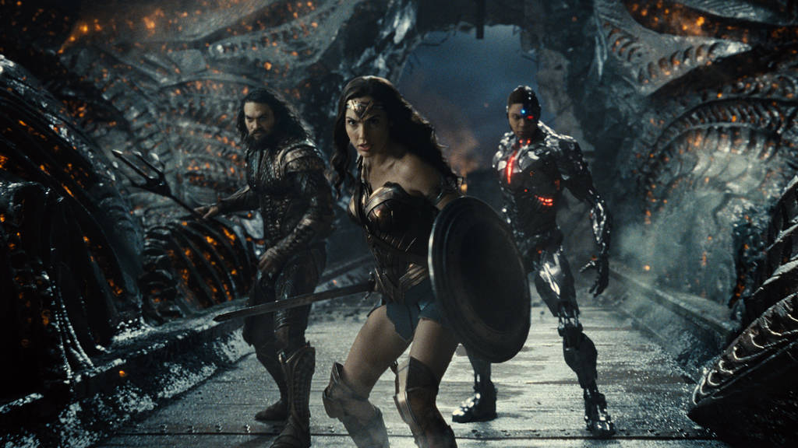

Title : Zack Snyder's Justice League
- Cast : Gal Gadot Ben Affleck Ray Fisher Jared Leto Ezra Miller Ciarán Hinds Diane Lane Robin Wright Amy Adams Amber Heard Jeremy Irons An email you’ll actually love
- Age restriction :18LV
Showing times
- Mon-Fri : 15:00h-20:00h
- Sat : 14:00h-23:00h
- Sun : 11:00h-17:00h